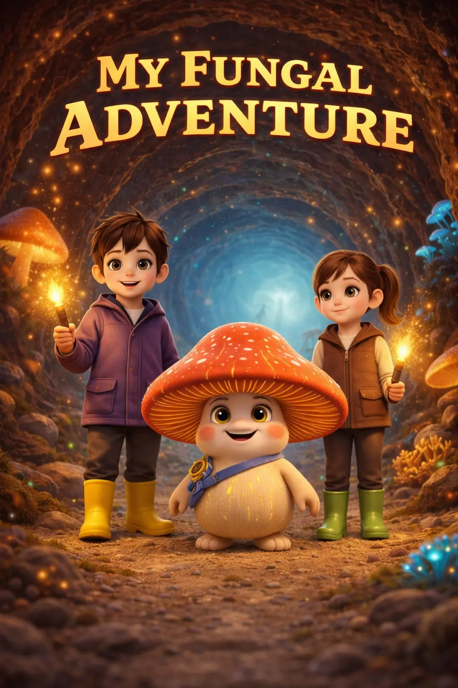
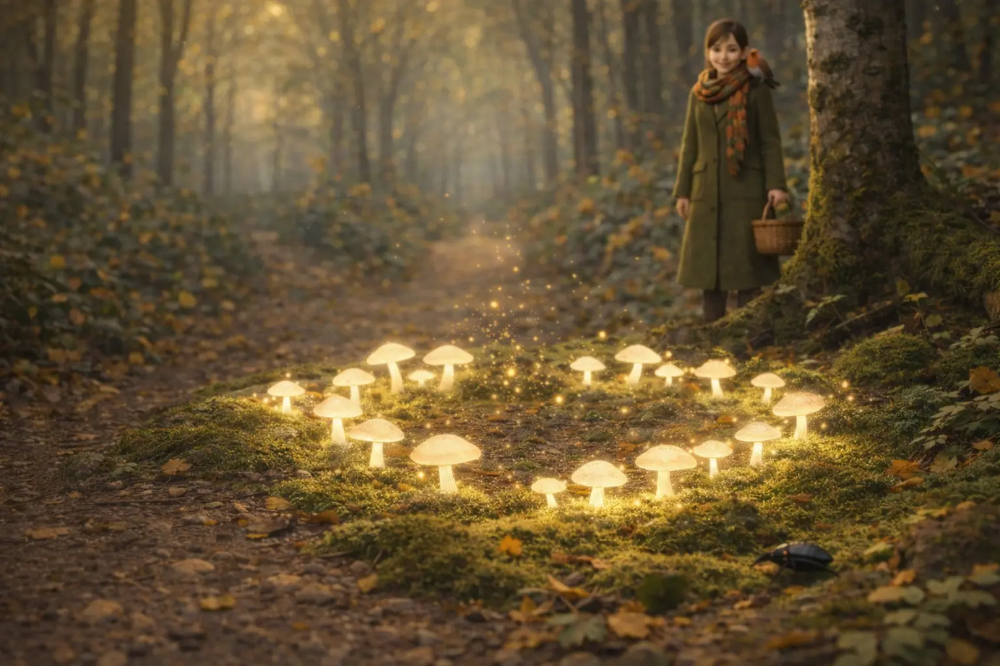
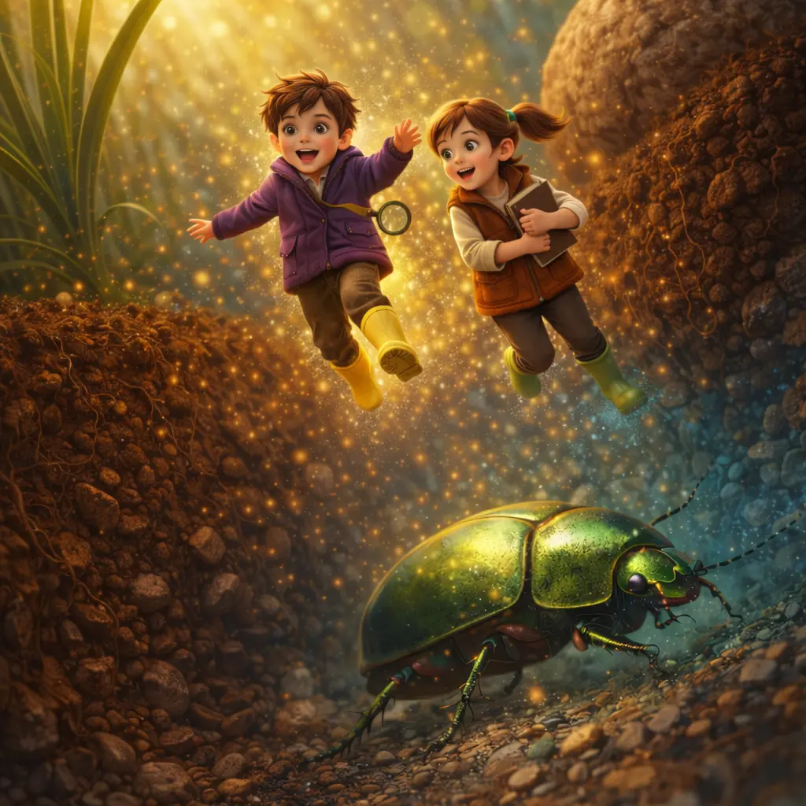
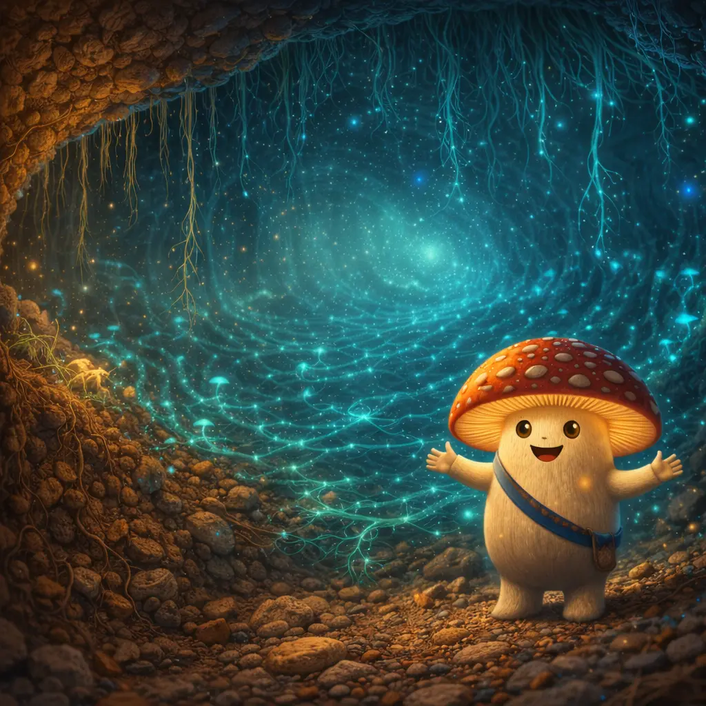
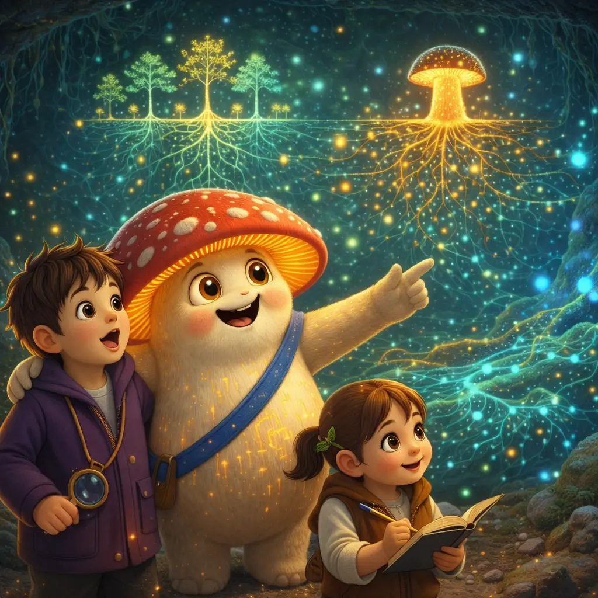

A 32-page picture book — manuscript complete, illustrations in progress.

Three illustrated spreads from the manuscript.




| Character | Species | Role in Book | Spread |
|---|---|---|---|
| Fun-Gus | Amanita | Guide & Mentor | 3 (Pages 8–9) |
| Spora | Newborn Spore | Audience Surrogate | 4 (Pages 10–11) |
| Lumos | Bioluminescent Mycena | Scout | 5 (Pages 12–13) |
| Puff | Giant Puffball | Messenger | 6 (Pages 14–15) |
| Chanty | Golden Chanterelle | Storyteller | 7 (Pages 16–17) |
| Rhiza | Mycorrhizal Interface | Translator | 8 (Pages 18–19) |
| Inky | Ink Cap | Scribe | 9 (Pages 20–21) |
| Stench | Stinkhorn | Diplomat | 10 (Pages 22–23) |
| Birdie | Bird's Nest Fungus | Launcher | 11 (Pages 24–25) |
| Snapper | Oyster Mushroom | Protector | 12 (Pages 26–27) |
Five books planned, each introducing new characters and science concepts.
Birch and Fern return during a drought. Meet Morel the wanderer and the Recyclers. Learn about decomposition and water sharing.
Meet Russula, who learns that cracks don't make you broken. Meet Physa the engineer. Learn about fragility, identity, and problem-solving.
Meet Tardi the indestructible. Venture to the network's dangerous edges. Learn about extremophiles and the limits of life.
Cordyceps arrives. The whole network must work together. Learn about parasitism vs. cooperation.